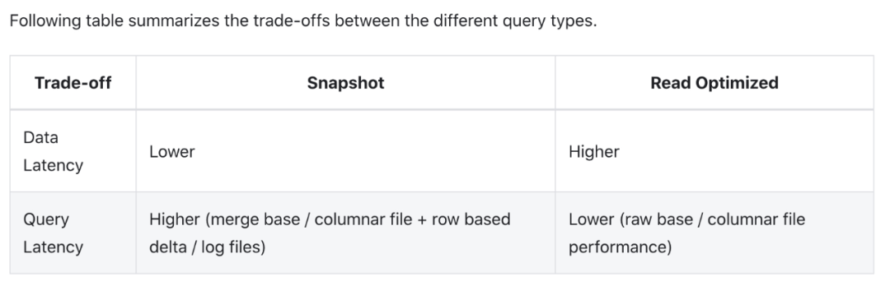
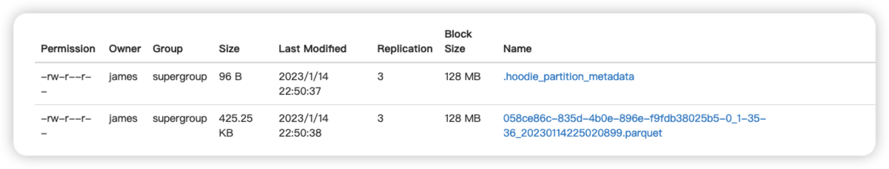
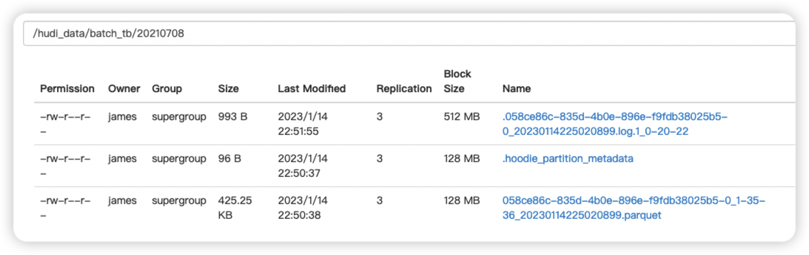

背景
Merge on Read（简称MOR表），是Hudi最初开源时尚处于“实验阶段”的新功能，在开源后的0.3.5版本开始才告完成。现在则是Hudi最常用的表类型。
Merge on Read是对Copy on Write的优化。优化了什么呢？主要是写入性能。
导致COW表写入慢的原因，是因为COW表每次在写入时，会把新写入的数据和老数据合并以后，再写成新的文件。单单是写入的过程（不包含前期的repartition和tagging过程），就包含至少三个步骤：
- 读取老数据的parquet文件（涉及对parquet文件解码，不轻松）
- 将老数据和新数据合并
- 将合并后的数据重新写成parquet文件（又涉及parquet文件编码，也不轻松）
种种原因导致COW表的写入速度始终快不起来，限制了其在时效性要求高，写入量巨大的场景下的应用。
原理解释
为了解决COW表写入速度上的瓶颈，Hudi采用了另一种写入方式：upsert时把变更内容写入log文件，然后定期合并log文件和base文件。这样的好处是避免了写入时读取老数据，也就避免了parquet文件不轻松的编解码过程，只需要把变更记录写入一个文件即可（而且是顺序写入）。显然是轻松了不少。
1 | warehouse |
典型的MOR表的目录，注意log文件包含写入的时间戳
这时或许会有疑问，“这样写入固然是轻松了，但怎么读到最新的数据呢？”是个好问题。为了解决读取最新数据的问题，Hudi提供了好几种机制，但从原理上来说只有两种：
- 读取数据时，同时从base文件和log文件读取，并把两边的数据合并
- 定期地、异步地把log文件的数据合并到base文件（这个过程被称为compaction）
第一种机制也是Merge on Read这个名字的由来，因为Hudi的读取过程是实时地把base数据和log数据合并起来，并返回给用户。注意这两种机制不是非此即彼的，而是互为补充。Hudi的默认配置就是同时使用这两种机制，即：读取时merge，同时定期地compact。
在读取时合并数据，听起来很影响效率。事实也是如此，因为实时合并的实现方式是把所有log文件读入内存，放在一个HashMap里，然后遍历base文件，把base数据和缓存在内存里的log数据进行join，最后才得到合并后的结果。难免会影响到读取效率。
COW影响写入，MOR影响读取，那有没有什么办法可以兼顾读写，鱼与熊掌能不能得兼？目前来说不能，好在Hudi把选择权留给了用户，让用户可以根据自身的业务需求，选择不同的query类型。
对于MOR表，Hudi支持3种query类型，分别是
- Snapshot Query
- Incremental Query
- Read Optimized Query
其中1和3就是为了平衡读和写之间的取舍。这两者的区别是：Snapshot Query和上文所说的一样，读取时进行“实时合并”；Read Optimized Query则不同，只读取base文件，不读取log文件，因此读取效率和COW表相同，但读到的数据可能不是最新的。
官方对两种query类型的解释如下:

代码验证
写入代码:
1 | package com.zxd.prac.hudi |
第一次写入，观察base文件
1
2
3
4
5{"txn_id":1,"user_id":"ww1","amount":90,"date":"20210708"}
{"txn_id":2,"user_id":"ww2","amount":35,"date":"20210708"}
{"txn_id":3,"user_id":"ww3","amount":35,"date":"20210708"}
{"txn_id":4,"user_id":"ww4","amount":45,"date":"20210709"}
{"txn_id":5,"user_id":"ww5","amount":25,"date":"20210709"}
第二次写入，观察增量log文件
1
2
3{"txn_id":3,"user_id":"ww333","amount":25,"date":"20210708"}
{"txn_id":6,"user_id":"ww6","amount":25,"date":"20210710"}
{"txn_id":7,"user_id":"ww7","amount":25,"date":"20210710"}
观察快照读，txn_id=3的user_id
1
2
3
4
5
6
7
8
9
10
11
12
13
14
15
16
17
18
19
20
21
22
23
24
25
26
27
28
29
30
31package com.zxd.prac.hudi
import org.apache.hudi.DataSourceReadOptions.{QUERY_TYPE, QUERY_TYPE_SNAPSHOT_OPT_VAL}
import org.apache.hudi.{DataSourceReadOptions, DataSourceWriteOptions}
import org.apache.hudi.config.HoodieWriteConfig
import org.apache.spark.sql.{DataFrame, SaveMode, SparkSession}
/**
* Created by Intellij IDEA.
* User: dante
* Date: 2022/5/31
*/
object ReadHudi {
def main(args: Array[String]): Unit = {
val session: SparkSession = SparkSession.builder().master("local")
.config("spark.serializer","org.apache.spark.serializer.KryoSerializer")
.appName("test").getOrCreate()
val basePath = "hdfs://localhost:8020/hudi_data/batch_tb";
val snapshotDF = session.
read
.format("hudi")
.option(QUERY_TYPE.key(),QUERY_TYPE_SNAPSHOT_OPT_VAL)
.load(basePath)
snapshotDF.createOrReplaceTempView("hudi_tmp_table")
session.sql("select user_id from hudi_tmp_table where txn_id = 3").show()
}
}运行结果如下:
1
2
3
4
5+-------+
|user_id|
+-------+
| ww333|
+-------+观察优化读
修改查询类型
1
2
3
4
5
6val snapshotDF = session.
read
.format("hudi")
// .option(QUERY_TYPE.key(),QUERY_TYPE_SNAPSHOT_OPT_VAL)
.option(QUERY_TYPE.key(),QUERY_TYPE_READ_OPTIMIZED_OPT_VAL)
.load(basePath)结果如下:
1
2
3
4
5+-------+
|user_id|
+-------+
| ww3|
+-------+显然，此时读的不是最新结果

...
...
This is copyright.